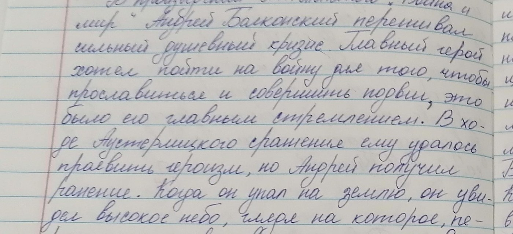
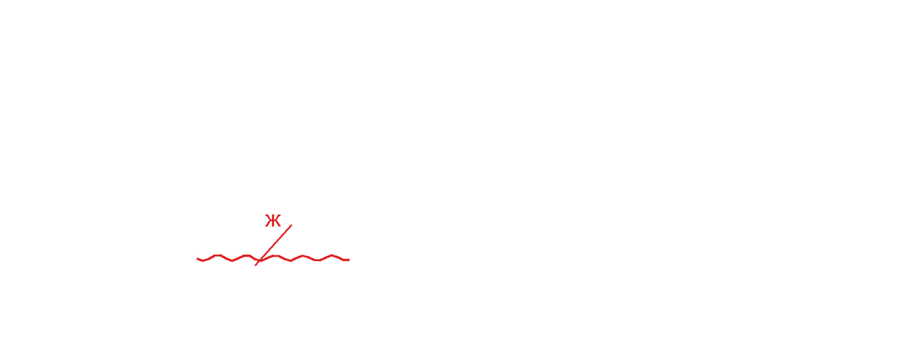

Notebooks checked in minutes, not evenings

The teacher does exactly the same as before — minus the evening spent checking.
Upload a page of work — BilimAI will show possible mistakes and a report for the teacher.
The platform is built on our own purpose-trained engine — compact, fast and designed for throughput. The more pages pass through the system, the bigger the gain.
A school of 1,000 students at 8 pages a day is about $1,500 of processing per school year. Nearly one and a half million checked pages a year.
Every metric is measured on a sealed held-out set: 112 real school notebook pages, 516 teacher-annotated mistakes. The model never trains on these pages.
This is how a single page gets checked. Click “Check again” or just watch it to the end.


The five most common assignment types in Uzbekistan’s schools.
What we don’t check: drawings, outline maps, technical drawings and diagrams. That is a separate task, and we say so honestly.
BilimAI does not assign grades and does not decide for the teacher — it shows possible mistakes, and the final decision always stays with the teacher.